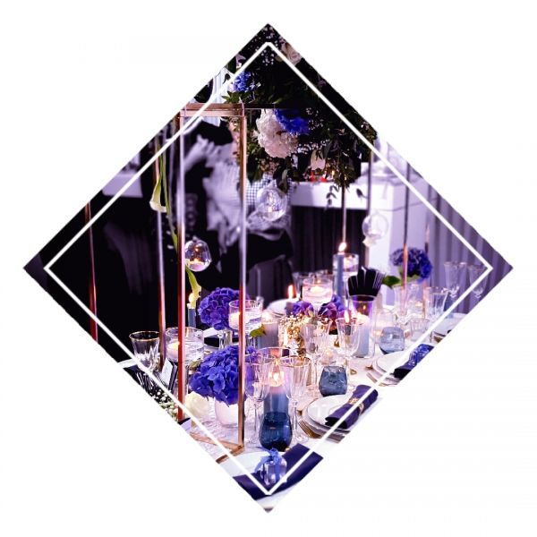
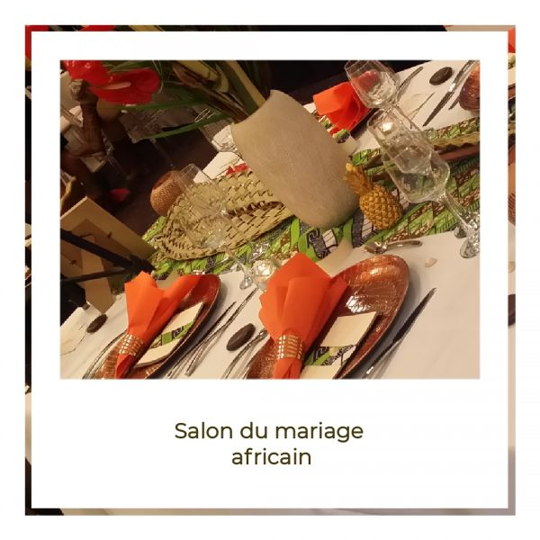

Que peut bien faire une société de décoration en période de confinement ?
L'arrivée du Covid a secoué nos habitudes nous poussant dans nos derniers retranchements. Décor'moi a décidé de vous raconter son confinement.

Voir le détail
Vous avez raté le Salon du Mariage de Tour&Taxi 2019, Décor’moi vous raconte.
2000 couples, 115 exposants et 4 défilés sur le site de Tour&Taxi, des chiffres qui font de ce salon un incontournable.

Voir le détail
Le tout premier Salon du Mariage Africain de Bruxelles
Un tout nouveau salon a vu le jour à Bruxelles en 2016 et ce fût le salon du mariage africain au Thon Hôtel Bristol Stéphanie avenue Louise